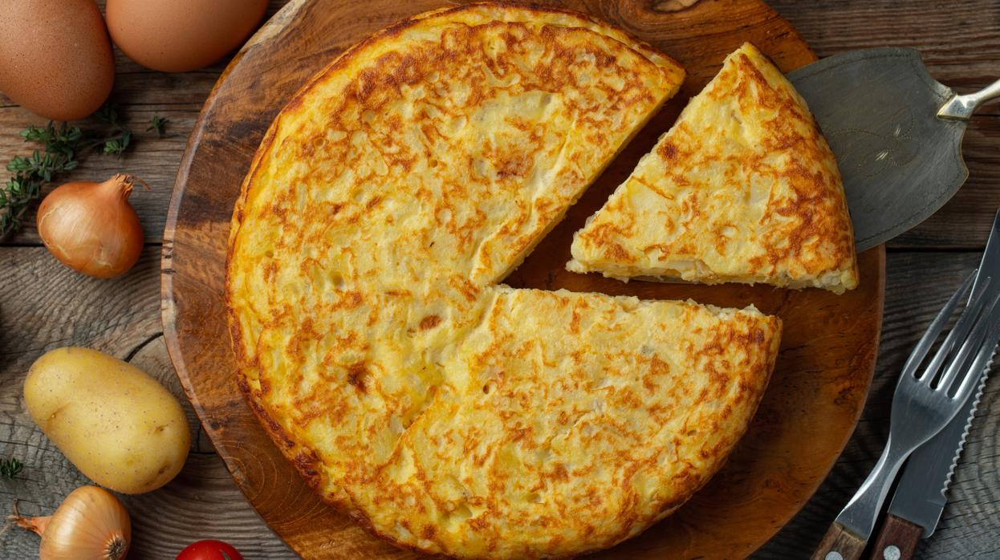
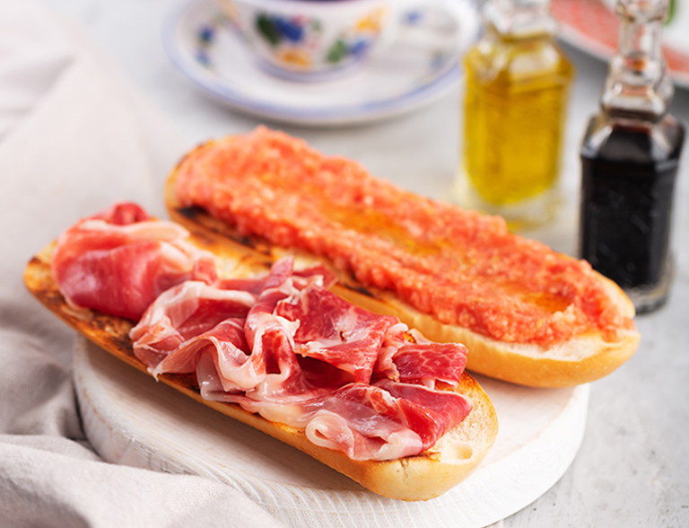

Inicio
>
Cultura Española
Cultura Española
Descubre los sabores auténticos de la cocina tradicional española
Mejor Valoradas
Filtros
Cultura:
Todas
Española
Italiana
Francesa
China
Japonesa
Venezolana
Dificultad:
Todas
Fácil
Media
Difícil
Tiempo:
Cualquier tiempo
Menos de 30 min
30 - 60 min
60 - 120 min
Más de 120 min
Aplicar Filtros

Tortilla de Patatas
Difícil
45 min
Cena
Churros con Chocolate
Fácil
35 min
Merienda
Paella
Dificil
70 min
Comida

Pan con Tomate
Fácil
15 min
Desayuno